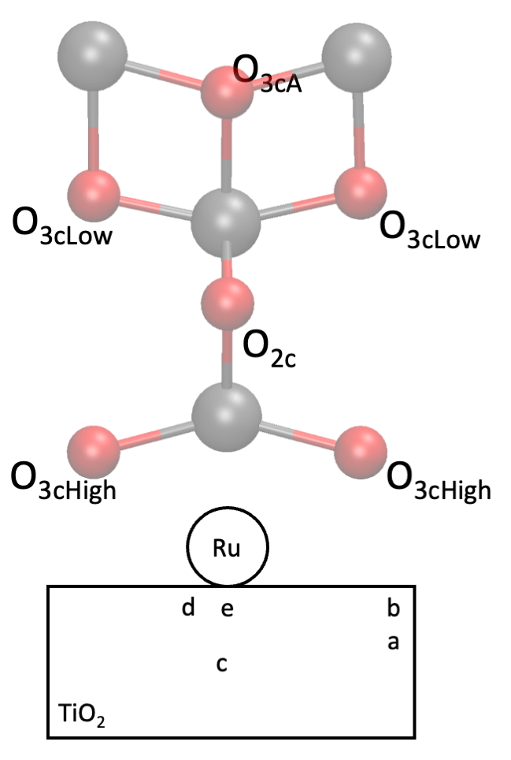

Speciation and morphology of supported Ru
Sub-nanometre ruthenium clusters on titania do not keep a fixed shape. Whether a Ru10 cluster wets the support or balls up depends on the reducing power of the surface underneath it, and oxygen vacancies in the anatase change that balance enough to switch the preferred morphology.
The consequence matters for catalysis: shape sets the fraction of under-coordinated Ru atoms, which is what the reaction actually sees. This was the core of my doctoral work with Carine Michel, built on global optimisation over a large configuration space followed by periodic DFT, with an explicit water phase added on top.
- VASP
- CP2K
- global optimisation
- ab initio thermodynamics
